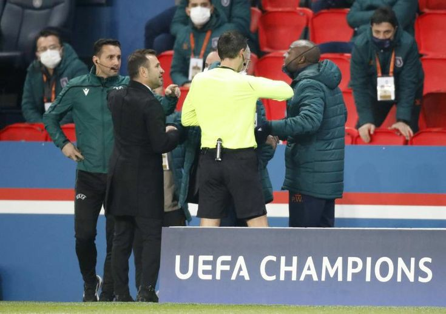

Jogo suspenso do psg marca nova postura em episódios racistas.
Os jogadores do psg e Istanbul Basaksehir pararam o jogo da liga dos campeões da Uefa o ex-jogador do Istanbul acusa o quarto árbitro de um ofensa racista.
Após o ocorrido os jogadores se recusaram a voltar para o campo e o jogo teve que ser remarcado. Atitudes como essa mostram que o racismo ainda está presente na sociedade mas não vai mas ser aturado.